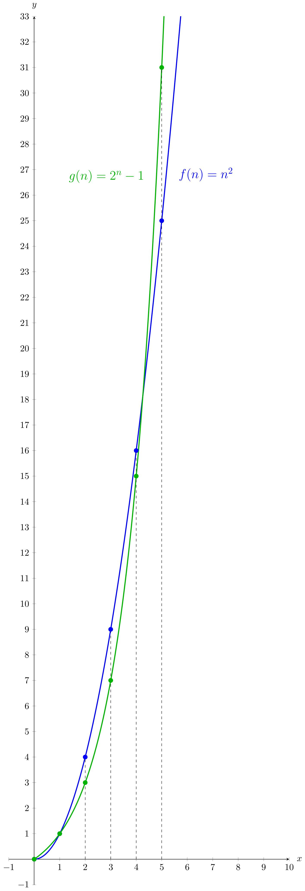

Comparing Function Growth: Intro

$f(n)$ and $g(n)$. CC BY-NC 4.0
% Code for creating the graph of f(n) = n^2 and g(n) = 2^n - 1.
\documentclass{standalone}
\usepackage{pgfplots} % Plotting library
\usetikzlibrary{intersections}
\begin{document}
\begin{tikzpicture}
\begin{axis}[
xlabel = $x$,
ylabel = $y$,
y = 1cm,
x = 1cm,
xmin = -1, xmax = 10, ymin = -1, ymax = 33,
axis lines = middle,
xlabel style = {anchor = west, xshift = 5pt},
ylabel style = {anchor = south, yshift = 5pt}
]
% Draw the curves + function labels:
\addplot [domain = 0:6, blue, very thick, samples = 400, name path global = Square] {x^2} node[pos=0.75, anchor=west, xshift = 10pt] {\Large $f(n) = n^2$};
\addplot [domain = 0:6, black!30!green, very thick, samples = 400, name path global = Expo] {2^x - 1} node[pos=0.4325, anchor=east, xshift = -10pt] {\Large $g(n) = 2^n - 1$};
% Draw the dots:
\pgfplotsinvokeforeach{0,...,5}{
\addplot[domain = -2:33, only marks, blue, very thick] coordinates {(#1, #1^2)};
\addplot[domain = -2:33, only marks, black!30!green, very thick] coordinates {(#1, 2^#1 - 1)};
}
% Draw the vertical, dashed lines:
\draw [dashed,->] (axis cs:2,0) -- (axis cs:2,4);
\draw [dashed,->] (axis cs:3,0) -- (axis cs:3,9);
\draw [dashed,->] (axis cs:4,0) -- (axis cs:4,16);
\draw [dashed,->] (axis cs:5,0) -- (axis cs:5,31);
\end{axis}
\end{tikzpicture}
\end{document} These notes by Miriam Briskman are licensed under CC BY-NC 4.0 and based on sources.
These notes by Miriam Briskman are licensed under CC BY-NC 4.0 and based on sources.